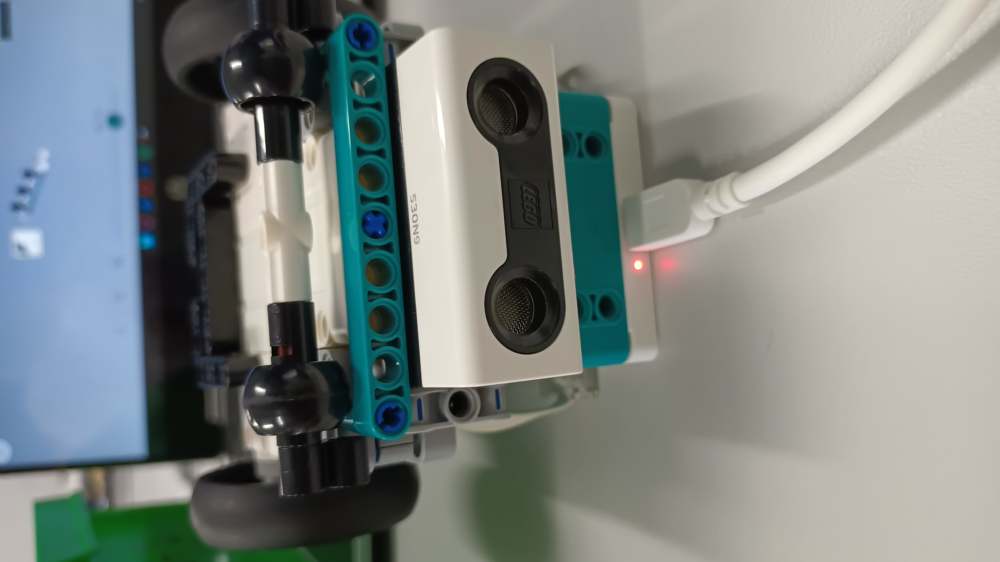
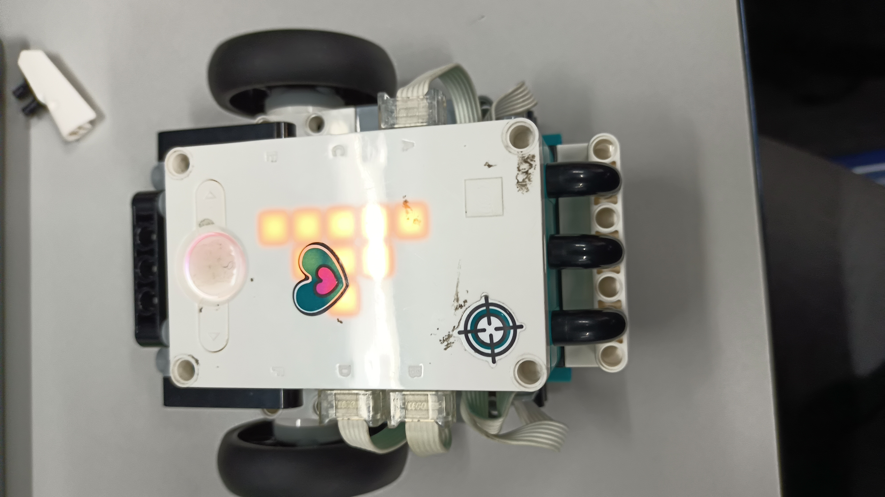
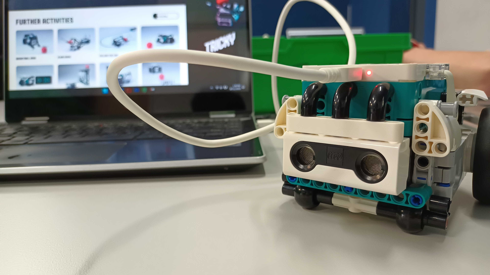
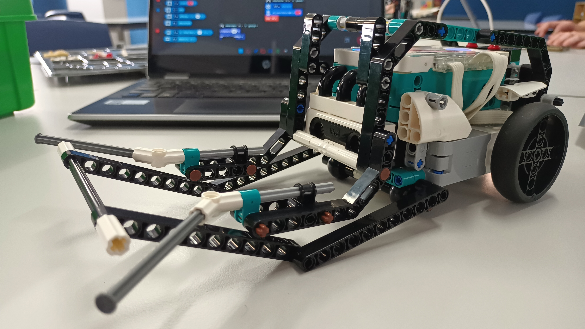
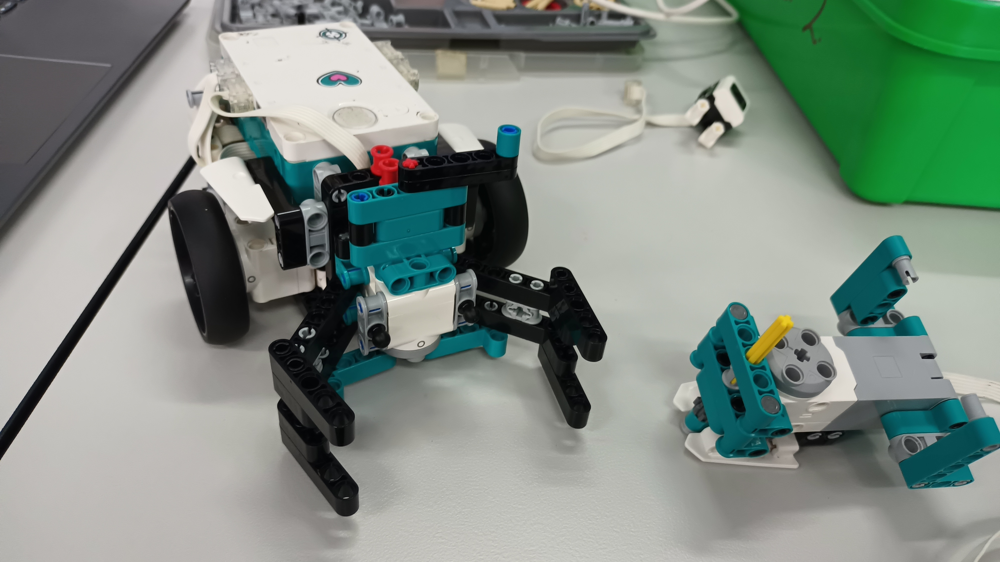

Building LEGO Mindstorms Robots
Term 1, Week 2For one of our IST projects, I helped build LEGO Mindstorms robots for the school Open Day. We set them up to do cool stuff like follow a line, play drums, and row a boat!
Our class put together and programmed different robots. One could follow a line on the floor, another played drums, and we even made a robot that could row a boat. It was awesome to see how coding and robotics can make everyday things come to life in fun ways!





